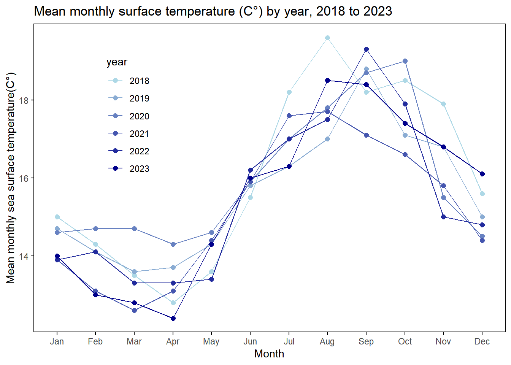

knitr::opts_chunk$set(echo = TRUE, message = FALSE, warning = FALSE)
#loading in libraries
library(tidyverse) #general use
library(here) #organization
library(gt)
library(janitor) #cleaning data frames
library(readxl) #reading excel sheets
library(dplyr) #
library(ggplot2) #creating figures
library(magick)
library(DHARMa)
library(MuMIn) #model selectionENVS 193 DS Final
#Set up tasks
Link to GitHub Repository: https://github.com/ewtsang/ENVS-193DS_spring-2025_final
Packages and Data:
#read in SB LTER data for this assignment (problem 2)
sst <-read.csv(here("data", "SST_update2023.csv"))
#read in Swift Parrot data for this assignment (problem 3)
sp_data <-read.csv(here("data", "occdist.csv"))Problem 1. Research Writing
a. Transparent statistical methods
In part one, the coworker used a correlation test to assess that there is no relationship between distance from headwater (km) and annual total nitrogen load (kg year-1)
In part two, the coworker used a one-way ANOVA test to see whether average nitrogen load differs across multiple source types (urban land, atmospheric deposition, fertilizer, wastewater treatment, and grasslands)
b. More information needed
What should also be included are (1) Effect size/dist for both analyses. For example, in part 1, was correlation positive? negative? how strong was it? A p-value by itself did not indicate the strength or nature of the relationship. (2) Post-hoc comparison for part 2 is needed. Since there are multiple nitrogen sources, a significant ANOVA should be followed by pairwise comparisons tukey hsd to determine difference in sources. This would give better context for interpretation of which alnd uses are contributing the most to nitrogen.
c. Suggestions for rewriting
add more here later Sites father from the river headwaters were associated with higher total annual nitrogen loads. We rejected the null hypotheses that there is no correlation between distance from headwater (km) and annual total nitrogen load (kg year-1). Using Pearson’s correlation, r = correlation coefficient, p = 0.03, a = 0.05
Nitrogen load varied significantly across different source types, indicating there is a key driver of elevated nitrogen levels to the system. We reject the null hypotheses that there is no difference in average nitrogen load between sources (urban land, atmospheric deposition, fertilizer, wastewater treatment, and grasslands) Using one way ANOVA, f=test statistic, df = degrees of freedom, p = 0.02, a = 0.05).A follow p post-hoc Tukey’s HSD test determined that ___ source (mean difference = average kg/year, p = p value) had significantly higher nitrogen loads than ___source (mean difference = average kg/year, p = p-value) no significant differences were found between other sources.
Problem 2. Data visualization
“This data package contains sea surface temperature (SST) data in the Santa Barbara Channel area. Data was obtained from the NOAA National Centers for Environmental Information (NCEI) at 0.25° resolution for the time between 1982 and 2023. This Daily Optimum Interpolation Sea Surface Temperature (OISST) Analysis (Version 2.1) derived its data from satellite (Advanced Very High Resolution Radiometer (AVHRR)) and in situ platforms (i.e., ships and buoys) and yielded 18 gird points within the Santa Barbara Channel.”
a. Cleaning and summarizing
#create object called sst_clean from sst
sst_clean <- sst |>
mutate(date = ymd(date),
year = year(date), #converting to date, making sure in numeric values
month = month(date, label = TRUE)) |> #abbreviated month "Jan", "Feb", etc.
filter(year %in% c("2018", "2019", "2020", "2021", "2022", "2023")) |> #only use data from 2018 to 2023
mutate(month = factor(month, levels = month.abb, ordered = TRUE)) |> #ensure month is an ordered factor (Jan to Dec)
#need a data frame with abbreviated month, year, and mean_monthly_sst
group_by(year, month) |>
summarize(mean_monthly_sst = round(mean(temp, na.rm = TRUE), 1), .groups = "drop")
#round temperatures to one decimal point
#drop duplicates
sst_clean$year <- factor(sst_clean$year, levels = c("2018", "2019", "2020", "2021", "2022", "2023"))
#display 5 rows from sst_clean
slice_sample(sst_clean, n = 5)# A tibble: 5 × 3
year month mean_monthly_sst
<fct> <ord> <dbl>
1 2023 Feb 13
2 2019 Feb 14.1
3 2019 Jul 16.3
4 2020 Jun 15.9
5 2023 Mar 12.8#structure from sst_clean
str(sst_clean)tibble [72 × 3] (S3: tbl_df/tbl/data.frame)
$ year : Factor w/ 6 levels "2018","2019",..: 1 1 1 1 1 1 1 1 1 1 ...
$ month : Ord.factor w/ 12 levels "Jan"<"Feb"<"Mar"<..: 1 2 3 4 5 6 7 8 9 10 ...
$ mean_monthly_sst: num [1:72] 15 14.3 13.5 12.8 13.6 15.5 18.2 19.6 18.2 18.5 ...b. Visualize the data
ggplot(data = sst_clean, #making visualization using cleaned sst data
aes(x = month, y = mean_monthly_sst, color = year, group = year)) +
scale_color_manual(
values = colorRampPalette(c("lightblue","darkblue"))(6)
) +
geom_line(
aes(group = year)) +
geom_point(
aes(),
#each individual point is sorted by year
size = 2) +
#labeling the title and axis of the plot
labs(title = "Mean monthly surface temperature (C°) by year, 2018 to 2023",
x = "Month",
y = "Mean monthly sea surface temperature(C°)") +
theme_minimal() +
theme(
panel.grid = element_blank(),
panel.border = element_rect(color = "black", fill = NA), #adding a panel border
axis.line = element_line(color = "black"),
axis.ticks = element_line(color = "black"), #adding axis ticks
legend.position = c(0.2, 0.8),
) #remove background gridlines and legend box
Problem 3. Data analysis
Working with the nest box occupancy dataset from Stojanovic, D., Owens, G., Young, C.M., Alves, F. and Heinsohn, R. 2021. “Do nest boxes breed the target species or its competitors? A case study of a critically endangered bird.” Restoration Ecology. DOI: 10.1111/rec.13319
a. Response variable
In this dataset, a 1 or 0 marks nest box occupancy for the columns of either Swift Parrot, Common Starling, Tree Martins, or if the the nest box was empty. A 1 indicates occupancy and 0 indicates vacancy.
b. Purpose of study
The study investigates how nest box occupancy by Swift Parrots and competing species (Tree Martins and Common Starlings) is influenced by distance from the forest edge and time since deployment. The researchers aim to evaluate whether permanent nest boxes benefit the endangered Swift Parrot or unintentionally support competitors.
c. Difference in “seasons”
In 2016, the nest boxes were newly deployed, while in 2019 they were established and had been in place for 3 years. The years represent different breeding seasons and help assess changes in box occupancy over time.
d. Table of models
4 models total:
| Model number | Edge Distance | Season | Description |
|---|---|---|---|
| 0 | no predictors (null model) | ||
| 1 | X | edge distance aspredictor | |
| 2 | X | season as predictor | |
| 3 | X | X | all predictors (full model) |
e. Run the models
f. Check the diagnostics
g. Select the best model
sp_data_clean <- clean_names(sp_data) |>
filter(box_occupant == "swift parrot")
model10 <- lm(sp ~ 1, data = sp_data_clean) #nopredictors
model11 <- lm(sp ~ edge_distance, data = sp_data_clean) #edge distance
mode12<- lm(sp ~ season, data = sp_data_clean) #season
mode13 <- lm(sp ~ edge_distance+ season, data = sp_data_clean) #both predictors
AICc(model10, model11, mode12, mode13) |>
arrange(AICc) df AICc
model11 3 -3232.971
model10 2 -3232.247
mode13 4 -3231.633
mode12 3 -3230.683h. Visualize the model preductions
i. Write a caption for your figure
j. Calculate model predictions
k. Interpret your results
Swift Parrots were less likely to use boxes farther from forest edge. Occupancy probability was higher in 2016 (new boxes) than 2019. Likely because permanent boxes were learned and overtaken by competitors (esp. starlings). Management should prioritize temporary or seasonally-sealed box
Problem 4. Affective and exploratory visualizations
Homework 3 Sketch
image<- image_read("/Users/ewtsa/Documents/ENVS-193DS/GitHub/ENVS-193DS_homework-03/HW3Paper.jpg")
grid::grid.raster(image)Homework 3 Draft
image<- image_read("/Users/ewtsa/Documents/ENVS-193DS/GitHub/ENVS-193DS_homework-03/HW3Draft.jpg")
grid::grid.raster(image)
Final Rendition
image<- image_read("/Users/ewtsa/Documents/ENVS-193DS/GitHub/ENVS-193DS_homework-03/HW3Draft.jpg")
grid::grid.raster(image)